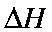

Next: A Walk Through COSMO Up: Theory Previous: Examples of POLAR keyword


Next: A Walk Through COSMO Up: Theory Previous: Examples of POLAR keyword
Based on materials provided by
Unlike the Self-Consistent Reaction Field model [74], the Conductor-like Screening Model (COSMO) is a continuum approach [30] which, while more complicated, is computationally quite efficient. The expression for the total screening energy is simple enough to allow the first derivatives of the energy with respect to atomic coordinates to be easily evaluated.
The COSMO procedure generates a conducting polygonal surface around the system (ion or molecule), at the van der Waals' distance. By introducing a e-dependent correction factor,
into the expressions for the screening energy and its gradient, the theory can be extended to finite dielectric constants with only a small error.
The accuracy of the method can be judged by how well it reproduces known quantities, such as the heat of solution in water (water has a dielectric constant of 78.4 at 25 C). Here, the keywords used were:
C). Here, the keywords used were:
NSPA=60 GRADIENTS 1SCF EPS=78.4 AM1 CHARGE=1
From the Table we see that the glycine zwitterion becomes the stable form in water, while the neutral species is the stable gas-phase form.
(After the COSMO paper was published, improvements in the method made the results shown in the Table invalid. However, the general conclusion that the method is of useful accuracy is still true.)
The COSMO method is easy to use, and the derivative calculation is of sufficient precision to allow gradients of 0.1 to be readily achieved.
|
Compound |
Method |
|
Hydration |
||
|
|
|
gas phase |
solution phase |
(calc.) |
Enthalpy(exp.) |
|
NH4+ |
AM1 |
150.6 |
59.5 |
91.1 |
88.0 |
|
N(Me)4+ |
AM1 |
157.1 |
101.1 |
56.0 |
59.9 |
|
N(Et)4+ |
AM1 |
132.1 |
84.2 |
47.9 |
57.0 |
|
Glycine |
|
|
|
|
|
|
neutral |
AM1 |
-101.6 |
-117.3 |
15.7 |
- |
|
zwitterion |
AM1 |
-59.2 |
-125.6 |
66.4 |
- |
 : Y. Nagano, M. Sakiyama, T. Fujiwara, Y. Kondo, J. Phys. Chem., 92, 5823 (1988).
: Y. Nagano, M. Sakiyama, T. Fujiwara, Y. Kondo, J. Phys. Chem., 92, 5823 (1988).


Next: A Walk Through Up: Theory Previous: Examples of POLAR keyword